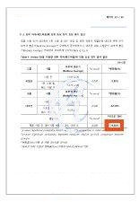

01EFFICACY TEST
외부 마찰 후, 무도포 부위보다
피부 붉은기 증가가 적었습니다
피부 붉은기 평균값 Antera 3D · Redness Average
시험 전패드 마찰 후
13.91
14.73
13.32
16.29
제품 도포 부위무도포 부위
무도포 부위 대비
붉은기 증가율 73.56% 낮음 시험 전후 변화율의 군 간 비교 결과
붉은기 증가율 73.56% 낮음 시험 전후 변화율의 군 간 비교 결과

성인 여성 22명 · 왼쪽 전박(아래팔) · Antera 3D · 군 간 비교 p < 0.05
시험기관 (주)에이스피부임상연구소 | 시험일 2026.09.28 | 시험 결과에는 개인차가 있습니다. 백분율은 보고서 기재값이며, 그래프는 참여자 평균값입니다.